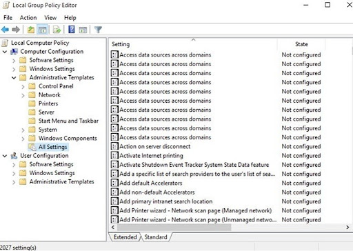

Opening CMDs:
sysdm.cpl
– opens system properties panel
ncpa.cpl
– To access network connections
firewall.cpl
– opens windows firewall setting
lusrmgr.msc
– opens local users & groups
services.msc
– – displays all the services running on system
gpedit.msc
– – opens Local group policy editor

dikmgmt.msc
– opens disk management console
compmgmt.msc
– opens computer management tool mstsc – (MICROSOFT TERMINAL
SERVICES CLIENT) is used to establish remote connection msra
– (MICROSFT REMOTE ASSISTANCE) is used to Start remote
assistance utility \\192.168.100.10\.......... Format of
Shared path for file sharing
SERVER CORE COMMANDS:
hostname
– get hostname
rename computer
– netdom renamecomputer “hostname of Computer (without
quotes)” /newname new name
CHECK USERS
– Net user
ADD USER
– Net user username password /add
check ip
– ipconfig
set ip
– netsh interface ipv4 set address name=12 source=static
address=ip(192.168.x.x) mask=255.x.x.x
Shutdown
– shutdown /s /t 0
Restart
– shutdown /r /t 0
firewall off
– netsh advfirewall set all profiles state off